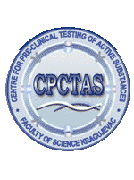

PIBAS FedSPARQL
PIBAS FedSPARQL is a web-based query builder and result set visualizer of bioinformatics data. It allows end-users to intuitively construct and run federated SPARQL queries across multiple data sources, including several global initiatives such as Bio2RDF, Chem2Bio2RDF, EMBL-EBI and one local, called PIBAS, as well as some other data sources added by the user. In accordance with the selected topic, subtopic, template and entered keyword, corresponding initial federated SPARQL query is created and executed. Based on obtained data, as an advanced search feature, end-users have the ability to choose the most appropriate data sources in their area of interest and exploit their RDF structure, which allow users to select certain properties of data source, in aim to enhance query results. Additionally, the system could detect similar data items even if they are identified by different URIs, by using our matching algorithm, based on Vector Space Model and Cosine Similarity measures. Developed system is sufficiently flexible and allows creating queries for extensive scope of bioinformatics topics. PIBAS FedSPARQL can be expanded with new topics, subtopic and templates and keywords, contributing to the robustness of information retrieval.
|  |
PIBAS FedSPARQL is designed to support Center for Preclinical Testing of Bioactive Substances (CPCTAS), as a part of large Project financed by the Ministry, is the laboratory for testing active substances. The subject of CPCTAS analysis includes monitoring of in vitro effects of active substances in the cell lines of different origin (primarily cancer cell lines) and primary cells isolated from different tissues. Active substances that are testing in CPCTAS are candidates for medical treatments. Tests include measuring of the effectiveness of a substance in inhibiting a specific biological function (IC50) in human cancer cell lines, the mechanisms of apoptosis, migration and angiogenesis.
Read more